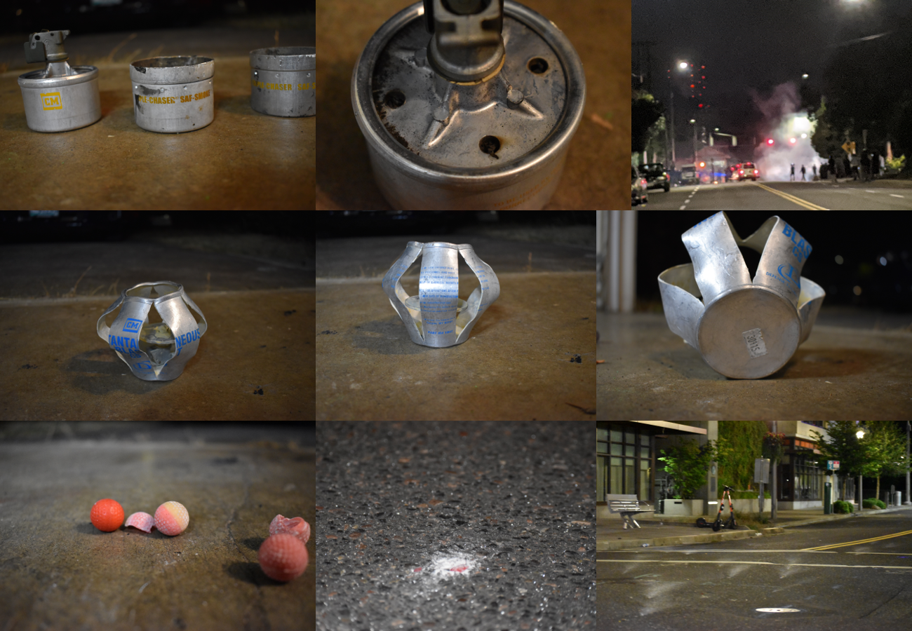

We are a consortium of researchers studying the impacts of chemical weapons use by law enforcement agencies in Portland, OR.
The extended use of chemical weapons (gasses, smokes, etc.) has already had a noticeable impact on the ecology of our city; we want to do what we can to swiftly mitigate the impact on human and environmental health. Our long-term goal is to assess the likely impact of these residues on local ecosystems and mitigate the damage as much as possible.
That is where you come in: we need you to be our eyes, ears, and cameras around the city!
We want your photographs of:
- chemical weapons recovered at the scene of a PDX protest
- chemical weapons while they are being deployed
We are especially interested in photos accompanied by date, time, and location information, or any other context you can share. If you have thoughts or interpretations, we are happy to hear those as well. Our only requirement is that you include at least one photo of the item in each report.
Photos can be from any time during the 2020 protests.
WHERE WILL MY REPORT GO?
Form submissions are managed securely via Netlify by DAPPER Stats, the company of lead researcher Dr. Juniper L. Simonis (they/them).
Observations will be collated and made publicly available on our website. We will remove identifying information from all text and photos before sharing any part of your report. Photos will only be used for research and education purposes. If you would like to be credited if your photos are used, please note that below.
If you have any questions or concerns contact lead researcher Dr. Juniper L. Simonis (they/them).
If you would prefer to submit your report via secure email instead, please send the photo and accompanying information to chemicalweaponsresearch@protonmail.com.

2020 DAPPER Stats